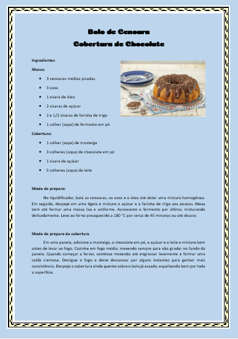

Copie o texto para o Word e aplique as formatações indicadas abaixo

clique para ampliar
📋 O que fazer no Word:
Tipo de papel: Carta
Layout › Tamanho › Carta
Margens de 2,3 cm em todos os lados
Layout › Margens › Personalizadas
Título centralizadoInício › Parágrafo › Centralizar
Cor de fundo de página (à sua escolha)
Design › Cor da Página
Borda de página (à sua escolha)
Design › Bordas de Página
Fonte: escolha o tipo de letra e a cor
Início › Fonte
Inserir uma imagem relacionada ao tema
Inserir › Imagens
Parágrafos do modo de preparo: recuo de 1,5 cm na 1ª linha + alinhamento justificadoInício › Parágrafo
📄 Texto para copiar no Word:
Bolo de Cenoura
Cobertura de Chocolate
Ingredientes
Massa:
3 cenouras médias picadas
3 ovos
1 xícara de óleo
2 xícaras de açúcar
2 e 1/2 xícaras de farinha de trigo
1 colher (sopa) de fermento em pó
Cobertura:
1 colher (sopa) de manteiga
3 colheres (sopa) de chocolate em pó
1 xícara de açúcar
5 colheres (sopa) de leite
Modo de preparo:
No liquidificador, bata as cenouras, os ovos e o óleo até obter uma mistura homogênea. Em seguida, despeje em uma tigela e misture o açúcar e a farinha de trigo aos poucos. Mexa bem até formar uma massa lisa e uniforme. Acrescente o fermento por último, misturando delicadamente. Leve ao forno preaquecido a 180 °C por cerca de 40 minutos ou até dourar.
Modo de preparo da cobertura
Em uma panela, adicione a manteiga, o chocolate em pó, o açúcar e o leite e misture bem antes de levar ao fogo. Cozinhe em fogo médio, mexendo sempre para não grudar no fundo da panela. Quando começar a ferver, continue mexendo até engrossar levemente e formar uma calda cremosa. Desligue o fogo e deixe descansar por alguns instantes para ganhar mais consistência. Despeje a cobertura ainda quente sobre o bolo já assado, espalhando bem por toda a superfície.